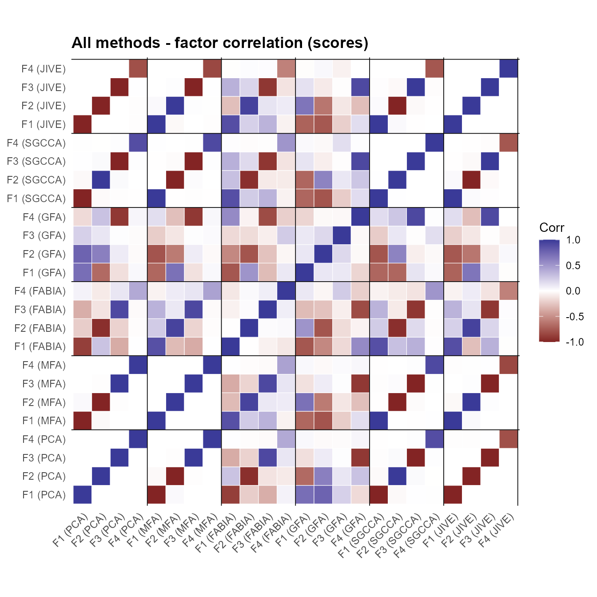
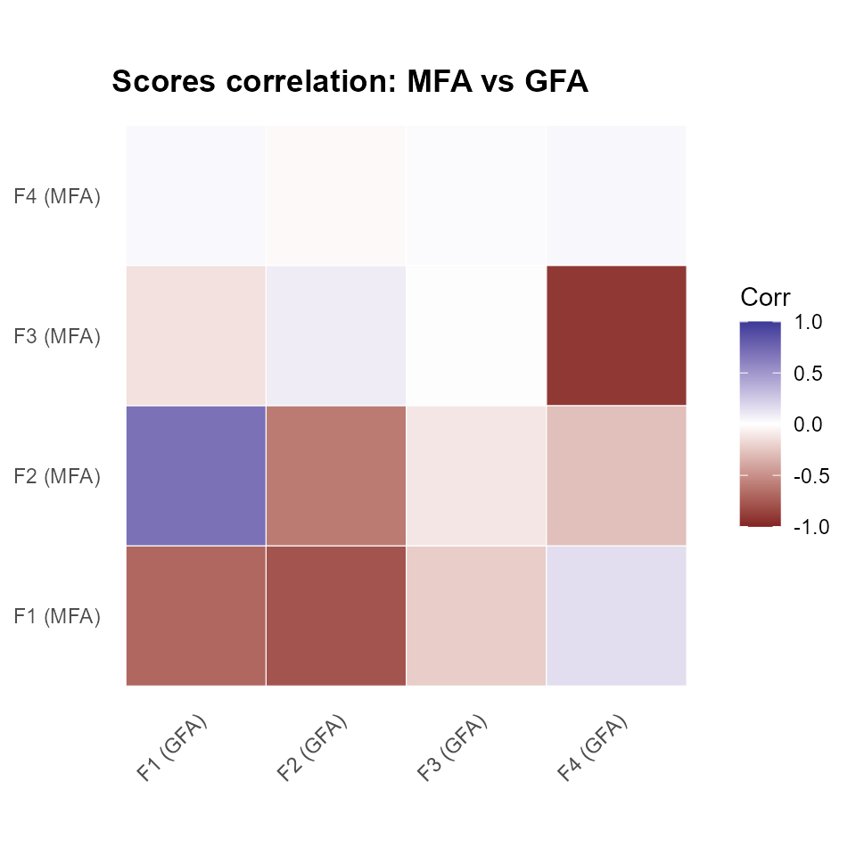
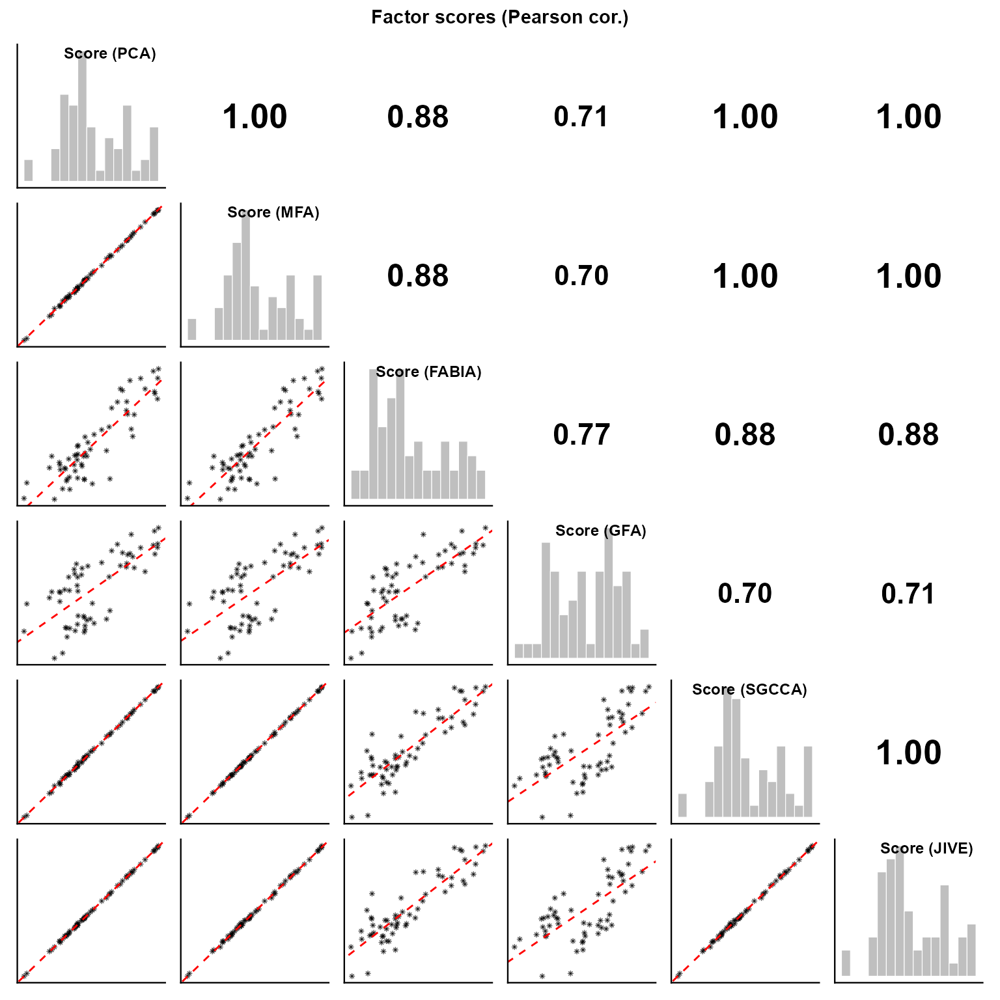
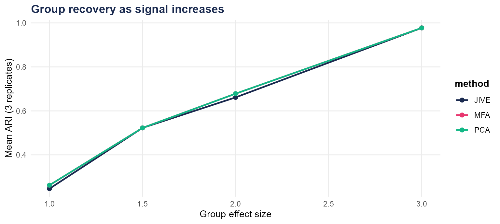

When several methods are run on the same data, two questions follow: do they find the same factors? and, when the truth is known, which recovers it best? factomics answers both.
library(factomics)
sim <- simulate_multiomics(n_samples = 60, seed = 1)
res <- run_factor_pipeline(
sim$data, methods = c("PCA", "MFA", "FABIA", "GFA", "SGCCA", "JIVE"),
k = 4, verbose = FALSE)Do the methods agree?
Factor order and sign are arbitrary, so factors are first matched between each pair of methods with the Hungarian algorithm on the absolute score correlations. The summary reports how well the matched factors agree:
bm <- benchmark_factor_methods(res)
knitr::kable(bm$summary_table_scores[, c("pair", "k_matched_scores",
"mean_abs_corr_scores",
"max_abs_corr_scores")],
digits = 2)| pair | k_matched_scores | mean_abs_corr_scores | max_abs_corr_scores |
|---|---|---|---|
| PCA vs MFA | 4 | 1.00 | 1.00 |
| PCA vs FABIA | 4 | 0.79 | 0.95 |
| PCA vs GFA | 4 | 0.59 | 0.91 |
| PCA vs SGCCA | 4 | 0.97 | 1.00 |
| PCA vs JIVE | 4 | 0.95 | 1.00 |
| MFA vs FABIA | 4 | 0.80 | 0.95 |
| MFA vs GFA | 4 | 0.60 | 0.92 |
| MFA vs SGCCA | 4 | 0.98 | 1.00 |
| MFA vs JIVE | 4 | 0.96 | 1.00 |
| FABIA vs GFA | 4 | 0.65 | 0.82 |
| FABIA vs SGCCA | 4 | 0.82 | 0.95 |
| FABIA vs JIVE | 4 | 0.83 | 0.95 |
| GFA vs SGCCA | 4 | 0.64 | 0.92 |
| GFA vs JIVE | 4 | 0.60 | 0.91 |
| SGCCA vs JIVE | 4 | 0.94 | 1.00 |
The same is done for loadings, per view:
head(bm$summary_table_loadings[, c("pair", "dataset",
"mean_abs_corr_loadings")])
#> pair dataset mean_abs_corr_loadings
#> 1 PCA vs MFA transcriptome 0.9985341
#> 2 PCA vs MFA metabolome 0.9985559
#> 3 PCA vs MFA microbiome 0.9991558
#> 4 PCA vs FABIA transcriptome 0.7903666
#> 5 PCA vs FABIA metabolome 0.7616376
#> 6 PCA vs FABIA microbiome 0.8272434All factors of all methods in one correlation heatmap:
bm$all_scores_heatmap
Pairwise heatmaps and scatter plots of matched factors are also returned:
bm$pair_heatmaps_scores[["MFA|GFA"]]
bm$pairs_scores_by_factor[["F1"]]
Which method recovers the truth?
With simulated data the true factors and signal features are known.
Factor recovery: the best absolute correlation of each true factor with any fitted factor.
recovery <- sapply(names(res), function(m)
apply(abs(cor(sim$truth$Z, res[[m]]$scores)), 1, max))
round(recovery, 2)
#> PCA MFA FABIA GFA SGCCA JIVE
#> LF1 0.95 0.94 0.98 0.83 0.94 0.95
#> LF2 0.96 0.96 1.00 0.76 0.96 0.96
#> LF3 0.90 0.90 1.00 0.80 0.91 0.90Feature recovery: give
benchmark_factor_methods() the true 0/1 feature labels and
it reports, per method, the AUC of the largest absolute loading as a
score for “this feature carries signal”.
bm_truth <- benchmark_factor_methods(
res, ground_truth_feature = sim$truth$feature_labels)
bm_truth$auc_results
#> target method AUC
#> 1 feature PCA 0.8432460
#> 2 feature MFA 0.8590427
#> 3 feature FABIA 0.8793578
#> 4 feature GFA 0.8581977
#> 5 feature SGCCA 0.8420337
#> 6 feature JIVE 0.8427317Sample groups: the adjusted Rand index of the clusters found on each method’s factors.
cl <- cluster_results(res, k = 2:6)
compare_clusterings(cl, setNames(sim$metadata$group,
sim$metadata$sample))$vs_truth
#> method ARI
#> 1 PCA 1.0000000
#> 2 MFA 1.0000000
#> 3 FABIA 0.6330688
#> 4 GFA 1.0000000
#> 5 SGCCA 1.0000000
#> 6 JIVE 1.0000000
#> 7 Concatenated data 1.0000000Repeating over many simulated data sets
A small benchmark loop, varying the signal strength:
bench_one <- function(effect, seed) {
s <- simulate_multiomics(n_samples = 45, effect = effect, seed = seed)
r <- run_factor_pipeline(s$data, methods = c("PCA", "MFA", "JIVE"), k = 3,
verbose = FALSE)
cl <- cluster_results(r, k = 3, include_data = FALSE)
out <- compare_clusterings(cl, setNames(s$metadata$group,
s$metadata$sample))$vs_truth
out$effect <- effect
out
}
grid <- do.call(rbind, lapply(c(1, 1.5, 2, 3), function(e)
do.call(rbind, lapply(1:3, function(sd) bench_one(e, sd)))))
agg <- aggregate(ARI ~ method + effect, grid, mean)
library(ggplot2)
ggplot(agg, aes(effect, ARI, colour = method)) +
geom_line(linewidth = 0.9) + geom_point(size = 2) +
scale_colour_manual(values = factomics_palette(3)) +
labs(x = "Group effect size", y = "Mean ARI (3 replicates)",
title = "Group recovery as signal increases") +
theme_factomics()